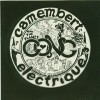
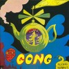

strange music page
canterbury music * * * gong/d.allen
#GONGは(1枚目出る前に)SOFT MACHINEを抜けたD.Allenが作ったバンドです。Flying Teapot/Angel Egg/Youのラジオノーム三部作って辺りのCDがこのバンドらしい作品と思います。サイケでユーモアでスペイシーで、キノコ生えてそーで。
D.AllenはYOUまでで一旦バンドを抜けてソロを出したり、PLANET GONGやNEW YORK GONG等としても色々な場所で活躍していきます。特にNEW YORK GONGはその後のMATERIALからN.Y.の(KNITTING FACTORYとかそっちの方の)アンダーグラウンド系に繋がるという.....
D.Allenの抜けられた方のGONGはS.Hillageがリーダーになって「Shamal」っていうサイケだかロックだかジャズだか良く分からん変なアルバムを出すものの、S.Hillageも脱退。
残ったメンバーはP.Moerlen's GONGとして、パーカッションの交錯する変なジャズロックバンドとして活動していきます。（最近ハマってんだコレが、格好イイの）
蜘蛛の巣みたいに(世界中に)入り乱れたファミリーツリーが書けそうなバンドです、とても全部は把握できないですけど、興味を持った所から追っかけていくと色々な音に出会えるかも。
|
- GONG
- NEW YORK GONG
- Pierre Moelen's GONG
- David Allen
- David Allen & KRAMER
|
#しょっぱなからG.Smythのスペースウィスパー(あえぎ声)がやらしいです。
キノコ具合は聴いたこと有るヤツの中ではこのCDが一番キテルみたい、ジャケは白黒ですけどCDの中味は極彩色のサイケポップワールド。耳から煙出そうな感じのハッピーな世界です。

- Radio Gnome
- You Can't Kill Me
- I've Bin Stone Before
- Mister Long Shanks: O Mother I Am Your Fantasy
- Dynamite: I Am Your Animal
- Wet Cheese Delirum
- Squeezing Spnges Over Policemen's Heads
- Fohat Digs Holes In Space
- Tried So Hard
- Tropical Fish Selene
- Gnome The Second
- David Allen (guitars,vocals)
- Gilli Smyth (space whisper)
- Didier Malherbe (sax,flute)
- Christian Tristch (bass)
- Pip Pyle (drums)

- Radio Gnome Invisible
- Flying Teapot
- The Pot Head Pixies
- The Octave Doctors & the crystal machine blake
- ZERO the HERO and the Witch's Spell
- Witch's Song
i am your pussy
- David Allen (guitars,vocals)
- Steve Hillage (guitars)
- Tim Blake (synthesizer,keyboards)
- Christian Tritsch (bass)
- Didier Malherbe (sax,flute,winds)
- Gilli Smyth (voices)
- Richid Houari (drums)
- Mike Howlett (bass,vocals)
- Pierre Moerlen (percussions)
- Francis Moze (bass)
#RADIO GNOME INVISIBLEの第二作。一作目ほどヘロヘロでもなく、三作目ほどソリッドな感じでもなく、適度にフワフワした感じが良いです。
Outer Temple～Inner Templeの軽～くファンクな感じがかっちょいーです。
ちなみに14曲目はボーナストラック。(2003.08.09)
- Other Side of the Sky
- Sold to the Highest Buddha
- Castle in the Clouds
- Prostitute Poem
- Givin my Luv To You
- Selene
- a. Flute Salad
b. Oily Way
- Outer Temple
- Inner Temple
- Percolations
- Love is How You Make It
- I Never Glid Before
- Eat That Phone Book Coda
- Oob-Scooby Doomsday or The D-Day DJ's Got The D.D.T. Blues
- David Allen (guitars,vocals)
- Tim Blake (synthesizers,vocals)
- Steve Hillage (guitars)
- Mike Howlett (bass)
- Didier Malherbe (flute,sax)
- Pierre Moerlan (drums,percussions)
- Gilli Smyth (spacewhisper,vocals)
VIRGIN RECORDS: CDV-2007 (1973)
#ラジオノーム三部作、完結篇です。一般にはゴングの最高作とか言われてますね。
耳から煙の出てるよーなゆる～い感覚はそのままに、ジャズロックみたいな高揚感が有って、宇宙のどこにもないよーな音楽になってます。サイコ―。

- Thoughts for Naught
- APH.P's Advice
- Magic Brother Invocation
- Master Builder
- A Sprinkling Of Clouds
- Perfect Mystery
- The Isle Of Everywhere
- You Never Blow Yr Trip Forever
- David Allen
- Gilli Smyth
- Didier Malherbe
- Steve Hillage
- Tim Blake
- Mike Howlett
- Pierre Moerlen
CAROLINE RECORDS: CAROL-1664-2 (original release 1974 - VIRGIN RECORDS)
#えーとSteve Hilage脱退後、Pierre Moerlen主導になったGONGです。編成見ると打楽器×４＋ギター＋ベース＋サックスという不思議なモノ。vibraphoneとpercussionの交錯するエキゾチックな音が魅力かなーと思います。
カッコいいんですけど、この路線での完成度から考えると
Expressso IIの方が好きかなーとか思います（Allan Holdsworthが嫌いってのもあるが）
えーとDidier Malherbeもこのアルバムを最後に脱退しちゃうんですけど、「Shadows of」の疾走するパーカッション群の上で妖しいフルート吹いてるパートなんかとてもかっちょいいです。(2003.12.2)

- Expresso
- Night Illusioin
- Percolations Part 1
Percolations Part 2
- Shadows of
- Esnuria
- Mireille
- Pierre Moerlen (drums,marimba,timpani,glockenspiel)
- Mireille Bauer (vibraphone,marimba,glockenspiel)
- Didier Malherbe (sax,flute)
- Benoit Moerlen (vibraphone)
- Allan Holdsworth (guitars)
- Francis Moze (bass,gong,piano)
- Mino Cinelou (conga,percussions)
VIRGIN RECORDS: CDV-2074 (1976)
#ラジオノーム三部作の頃よりは、BRAND-Xとかのジャズロックを想像してもらった方が近いかな？打楽器の交錯するスピード感の有る楽曲群がかっちょいいです。ほんとにかっちょいいです。特にラス曲、凄い。
ちなみにこのCDの前のアルバムでは正式メンバーだったAllan Holdsworthも結構弾いてます。実はこの人あんまり好きじゃないんですけど、このアルバムではサイドマンとして変なフレーズを弾いて曲のテンション高めてて、イイ感じでした。(2003.10.25)
- Heavy Tune
- Golden Dilemma
- Sleepy
- Soli
- Boring
- Three Blind Mice
- Pierre Moerlen (drums,percussions,vibraphone,xylophone)
- Benoit Moerlen (vibraphone,tubular bells,glockenspiel,claves,xylophone)
- Mireille Bauer (marimba,vibraphone)
- Hansford Rowe (bass)
- Mick Taylor (guitars on 1.)
- Allan Holdsworth (gutiars on 1.3.4.)
- Francois Causse (conga on 2.3.4.5.6.)
- Bon Lozaga (guitars on 2.)
- Darryl Way (violin on 5.)
CAROL RECORDS: CAROL-1659-2 (1978)
- Preface
- Much Too Old
- Black September
- Materialism
- Strong Woman
- I Am A Freud
- O My Photograph
- Jungle Windo(w)
- Hours Gone
- David Allen (guitars,vocals)
- Bill Laswell (bass)
- Bill Bacon (drums)
- Fred Maher (drums)
- Cliff Cultreri (guitars)
- Gary Windo (tenor sax on 8.)
- Machael Beinhorn (synthesizers on 1.)
- Don Davis (alto sax on 6.)
- Mark Kramer (cheap organ on 9.)
VICTOR: VICP-61176 (original release 1980)
#これも未だによく分かってないんですけど、PLANET GONG時代。なんだかすっげー古い録音から新しめの録音まで色々混じってるみたいな感じです。潰れる直前の渋谷WAVEで安く買いました。
なんだかソフトマシーンっぽい録音も含まれてるみたいですけど.....ナゾ、変なの買っちゃったな。11曲目(CDの表示とケースの表記が違うみたい、ケースは23曲でCD入れると21。何かそんな事がケースにも書いてある)とかサイケフォークで好き、他は散漫。
- The Concert Intro
- Captain Shaw & Mr.Gilbert
- Love Makes Sweet Music
- Riot 1968
- Dreaming It
- I Feel So Lazy
- And I Tried So Hard
- Radio Gnome Pre-Mix
- Pot Head Pixies
- Magick Brother
- Line Up
- Clarence In Wonderland
- Where Have All The Hours Gone
- Gong Poem
- Deya Goddess
- Opium For The People
- Red Alert
- 13/8
- Gliss U-Well
- Future
- The Dream
- Chernobyl Rain
- Let Me Be One
SPARAX: 14518
#うーんと一切ナゾ(スイマセンあんまりD.Allen周り詳しく無くて....)ほとんどD.Allen一人の録音っぽいです、エレクトロサイケてな感じです。タワレコセールで\480。(2001.2.15)
- WHEN
- WELL
- BELL
- BOON
- DAB
- GAY
- RUDE
- DISGUISE
- PEARLS
- BODIGAS
- FROGHELLO
- FASFATHER
- SMILE
SPARAX: 14837 (1984,1995)
- Thinking Thoughts
- Love
- Who's Afraind?
- Shadown
- Bopera III
- Pretty Teacher
- Call It Accident
- Song For Robert
- C'est La Maison
- More & More
- Quit Yr Bullshit
- David Allen (guitars,voices)
- Kramer (bass,vocals,keyboards,flute)
- David Licht (percussions)
SHIMMY DISC (1992)